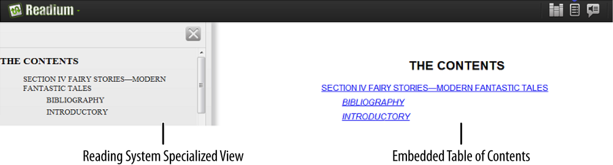
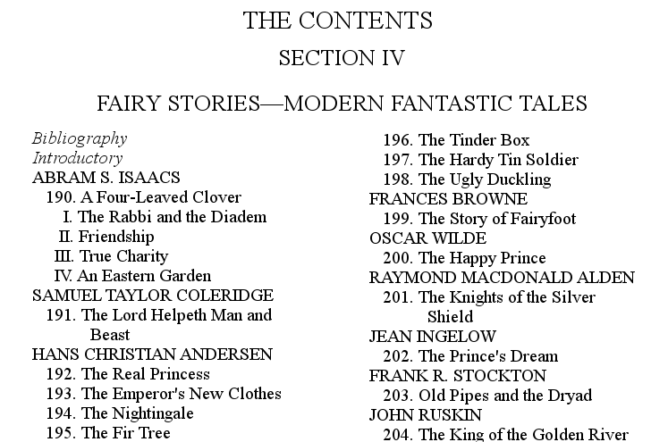
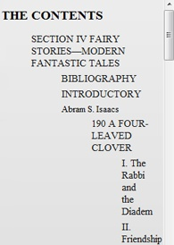

Although you may not often think of them this way, the navigation aids provided in a publication (such as the table of contents) represent another form of metadata. Tables of contents, lists of tables and illustrations, guides to major structures and even page numbers themselves all provide information about the publication that allow you to quickly move about it, whether in print or digital form.
One of the clear advantages that electronic documents have over print publications is that they provide a faster, easier and all-around better experience for navigating content. Even diehard print fans have to admit that the print table of contents, and its requisite page-flipping approach to finding where you want to go, hardly measures up to hyperlinked entries that immediately reveal the content. And there’s nothing like a table of contents that is instantly available at the push of a button.
It’s not surprising then that pretty much every electronic format facilitates navigation by the document structure, as shown in Figure 2-1. Microsoft Word has the document map, for example, which allows for accessible navigation of all the heading-styled sections of a Word document. Adobe Reader provides similar functionality for PDFs with text headings through the bookmarks panel, and DAISY digital talking books and EPUB 2 both use the Navigation Control file for XML applications (NCX), as does Amazon’s Mobi format.
Although this might sound like a case for why navigation is just required functionality—and it is—the EPUB 3 revision took a number of much-needed changes in direction to beef up support. The biggest of these was dropping the NCX in favor of a new format: the EPUB navigation document.
If you’re familiar with the NCX format used in EPUB 2, and know how complex it could be to create for the functionality it provided, you can breathe a sigh of relief at this point, because the new navigation document markup is based on a subset of HTML5—part of bringing EPUB more in line with web standards. You get the same functionality, but with less work and no need for new knowledge acquisition.
There is still a use for the NCX if you plan to target your content to both EPUB 2 and 3 reading systems, but we’ll return to this topic at the end of the chapter, because its necessity diminishes as time goes by.
The easy way to tackle the navigation document would be to state the obvious, that it’s for navigation, and run through a few code snippets to give a feel for the markup. But because our goal is to look deeper into the format and lay out best practices, let’s instead delve first into the nature of the document to get grounded in why it exists and for what purposes.
If you want to amaze your friends and colleagues with your knowledge of EPUB (and who doesn’t?), you need to grasp two key concepts in relation to the changeover to the navigation document. The first is that the markup it contains now serves a dual purpose. Like the NCX, it is still designed to enable reading systems to provide the reader with a specialized table of contents view, but it also has a new presentational role as content in the publication. Disambiguating these roles can be a bit confusing, though, because it’s not the case with the navigation document that XHTML is always XHTML.
Anyone who has used any EPUB reading system should already be familiar with the options they provide to quickly bring up the table of contents and move around. Dedicated devices sometimes integrate buttons right into the hardware, while software players typically build an option into the chrome to allow quick access and activation at any point while reading (a little swipe here or there and a button bar appears, for example), as shown in Figure 2-2. Opening the table of contents via these mechanisms might result in a table of links appearing in a new sidebar, or a floating view being overlaid on the current page.
But knowing the implementation particulars are not as important as understanding that this specialized view is not a part of the EPUB content itself; the navigation menu is a feature that the reading system provides using the navigation document markup. The rendering is completely up to the developers who built that particular system. The generation of this specialized table of contents view is the primary reason for the existence of the navigation document.
While these specialized views are effective tools, embedding a table of contents in the publication body is a common practice that has survived the digital transition, because not every reader wants to leave the book to orient themselves to the content when they first start reading. Usually, after passing over a cover and title page, the reader will encounter this more traditional text table of contents. This embedded table of contents has no special behaviors associated with it by the reading system, and it renders in the content viewport just like any other document in the publication.
Figure 2-3 shows these two uses for the navigation document as rendered in Readium.

Figure 2-3. Readium’s specialized table of contents (in a separate pane on the left, with no styling and grey background) and a styled embedded table of contents (on the right)
Some people might assume the foreign-looking XML grammar used to construct the NCX file required some special magic in the reading system in order to turn the tagging into an ordered set of links in the specialized view. Not so with the new navigation document. By choosing to reformulate the NCX as HTML5 lists of hyperlinks, when you see the markup for the new navigation file, your first thought is more likely going to be: “Oh, reading systems must just render the navigation document as web content.”
The actual rendering of the document is not so straightforward, however. The EPUB 3 specification gives a lot of leeway in terms of how the document can be presented by a reading system, so it’s actually quite hard to make definitive statements about how it will get rendered.
The current crop of EPUB 3 reading systems (such as Readium, iBooks, Google Play, Adobe Digital Editions, and others) continue to use the markup as a feed into their specialized rendering (part of the reason is undoubtedly to ensure a consistent reading experience between EPUB 2 and EPUB 3 publications, despite the different markup grammars). But this behavior is not required by the specification. A reading system could possibly appear one day that simply leverages XHTML processing to present the document and its links within the content pane (not to be confused with embedding the navigation document in the spine as content).
To render the navigation document as XHTML, a reading system has to perform some tweaking of the content to make it compatible, which is also why this is not a common practice. Some features of the specialized view deviate from the HTML5 specification, such as the way the hidden attribute has been appropriated for hiding content, as discussed later.
This point might seem belabored, but it is important to understand if you want to avoid fruitless time trying to style the navigation document for rendering in a reading system’s specialized view. As a content creator, you just have to accept that you will have little control over these specialized renderings beyond the text of your links. A reading system will typically ignore all CSS you include in the navigation document when building its own view, likewise all scripting, and even in an extreme case could ignore all inline markup within the links (although that would be taking the minimalism of presentation to a new level). As of this writing, no known reading systems honor styling or scripting added by the content creator in the specialized view, for example.
Of course, the flip side of all this warning about what a reading system won’t do with your content in the specialized view is that it will usually make up for it by providing its own rich experience for readers (expanding/collapsing sections, accessible keyboard shortcuts and navigation, etc.), without forcing content creators to double as developers.
The second concept to understand is that the navigation document is, first and foremost, a kind of container file. It is not just a table of contents, as it is often equated with, but encapsulates a set of discrete navigational aids of which the table of contents is just one. These unique lists are the inputs reading systems use to define their specialized navigation views. That you can use the document as content without modification does not alter this fact, nor that you can intersperse the lists with other HTML content for rendering in the spine. Reading systems will typically extract just these lists to create their specialized views.
The EPUB 3 specification defines three types of these navigation lists, and each serves a unique role: the table of contents typically gets the most attention, but the specification also defines a landmarks list and a page list. The format is also extensible, so you can create your own new types. The key is simply to think of each list as a self-contained unit. Although they share a common structure, each has its own differences, designed to meet its unique role in facilitating navigation.
But that’s as much theory as you need to know, and probably more than you wanted, but grasping the distinction really is vital to understanding which table of contents is which (when they come from the same source file) and why you have more control in one rendering and not the other.
Now, onward and upward into actually making one these documents.
The first question you might reasonably ask yourself is why you would ever want to handcraft any of the lists in the navigation document, and the answer is no one ever wants to build them all up from scratch! Programs that can create EPUBs have no problem autogenerating the lists from the publication’s markup, and you’d be wise to get a leg up on the creation process that way than going through the often laborious task of marking the navigation document up by hand.
But even if you don’t manually create one from the ground up, there are a few reasons why you’ll inevitably find yourself in your navigation document markup more often than you might think. One is that not all the navigation lists lend themselves perfectly to autogeneration. The table of contents and page list are perfect candidates for machine output (they just parallel information already coded in the publication markup), but landmarks are often included on a case-by-case basis only. You’re also going to come across situations where the document structure is so deeply nested (more than four or five levels deep) that you’ll want to control the rendering appearance. And, perhaps more than any other reason, when you embed the document in the content, you’ll to want to add post-production styling and any additional content that cannot be autogenerated from the document structure.
But let’s start at the beginning. As mentioned earlier, the navigation document is marked up like any other XHTML content document in EPUB, but with some notable rules and restrictions.
First, you need to declare the EPUB namespace on your navigation document’s root element:
<htmlxmlns="http://www.w3.org/1999/xhtml"xmlns:epub="http://www.idpf.org/2007/ops"...>
Each navigation list is identified by the epub:type attribute it carries, so this declaration is required in order for the document to validate.
The epub:type attribute (described in epub:type and Structural Semantics) is a new mechanism added in EPUB 3 for annotating your markup and is covered in Chapter 3. But you don’t need to jump ahead and learn its inner workings in order to understand its use for navigation.
Because the navigation document is effectively a list of navigation aids, you typically aren’t going to find a lot in the body of the document. If you choose to start your navigation document with a heading, you need to ensure that it makes sense as a superordinate heading to the table of contents, lists of table and illustrations, and any other navigation lists, especially when embedded as content.
A heading like this might prove to be both misleading and redundant, depending on how the document gets presented:
<body><section><h1>Table of Contents</h1>...</section><body>
The headings for lists of tables and illustrations are often the same level as the table of contents, but this heading would place them as child sections of the table of contents.
A better option is to use the title of work as the primary heading, especially if this is the first content document you present to the reader. For example, a navigation document for Charles Madison Curry’s Children’s Literature could start like this:
<body><section><h1>Children's Literature</h1>...</section></body>
The rest of the process of creating a navigation document is simply creating the nav lists. This chapter won’t discuss how you might decorate your navigation document with content between these lists, because that will differ from publication to publication. Suffice it to say, any legal XHTML content can be included within the body of the document, just not within the nav elements.
Because you cannot control how a reading system will present the navigation document, be wary about adding too much additional information. It’s entirely possible that the entire document will get rendered in a customized view, potentially cluttering the display and making navigation problematic for some readers. Minimal is often better, even if it means having to create a second table of contents to embed as content (it’s not required that you use the navigation document as content; it’s just a convenience).
Constructing a navigation list is an almost embarrassingly simple process. Each nav element must include an epub:type attribute to identify its purpose, may contain an optional heading, and must include a single ordered list (ol), as shown in the following mock markup:
<navepub:type="list-type"><h1>List Title</h1><ol>...</ol></nav>
That’s all there is at the core of each navigation list. We’ll see some of the real values you can use in the epub:type attribute as we build the various list types, but the rules for creating the ordered list provide the only small measure of complexity, and even they just follow a simple repeating pattern.
It’s useful to think of the ordered list within the nav as the primary branch of a tree, where each list item it contains either represents a leaf or a new branch. Leaves are terminal points, as nothing else grows out from them, while branches may continue to sprout new leaves and additional offshoots.
In practical markup terms, a leaf is an entry that contains a link (a) into the content:
<ol><li><ahref="c01.xhtml">Chapter 1</a></li></ol>
Every list eventually peters out into leaves; otherwise, it would grow on forever and you’d have developed the first infinite ebook! But if we only had leaves, we wouldn’t be able to recreate the actual document hierarchy, because everything would get flattened out like this:
<!-- Bad: --><ol><li><ahref="p01.xhtml">Part 1</a></li><li><ahref="c01.xhtml">Chapter 1</a></li>...<li><ahref="p02.xhtml">Part 2</a></li><li><ahref="c08.xhtml">Chapter 8</a></li>...</ol>
Trying to read a table of contents without any indenting is hard enough, but try using an assistive technology to traverse this kind of mash up, especially when you have numerous entries to wade through. Moving one item at a time, with no structural context to what is primary or subsidiary to what, does not facilitate the reading experience. Even if you could use CSS to set an indent visually, it wouldn’t improve the situation for users of assistive technologies, as you’ll see again for lists in Chapter 9.
Of course, this is branches form, by allowing another ordered list to follow the link. The chapters from the previous example can now be logically grouped under their respective parts, as follows:
<ol><li><ahref="p01.xhtml">Part 1</a><ol><li><ahref="c01.xhtml">Chapter 1</a></li>...</ol></li><li><ahref="p02.xhtml">Part 2</a><ol><li><ahref="c08.xhtml">Chapter 8</a></li>...</ol></li></ol>
As you might expect, the rules for creating these sublists are the same as the rules for creating the top-most ordered list; each list item is again either a leaf or a branch that follows the same rules.
There’s only one more case left to review: headings. Not every branch header links to a location in the document, as you’ll see soon with a real table of contents. In this case, you can substitute a span tag for the a:
<li><span>Part 1</span><ol><li><ahref="c01.xhtml">Chapter 1</a></li><li><ahref="c02.xhtml">Chapter 2</a></li>...</ol></li>
Note that you can use a span only when it’s followed by an ordered list. This means you can’t accommodate one pattern at this time: inactive links. For example, if you wanted to provide a preview of your ebook with a complete table of contents but only a section or two of available content, you wouldn’t be able to create a navigation document like this:
<!-- Bad: --><ol><li><ahref="foreword.xhtml">Foreword</a></li><li><ahref="c01.xhtml">Chapter 1: The Great Beyond</a></li><li><span>Chapter 2: A Fool's Egress</span></li>...<li><span>Glossary</span></li></ol>
Hacking at the a elements isn’t going to work, either. The href attribute has to contain a URI pointing to the location in the document to load, and the disabled attribute is ignored in the specialized view. JavaScript and DOM events are likewise ignored, as discussed earlier, so using an onclick event to trap reader activation won’t work:
<li><ahref="#c1"id="c1"onclick="return false;">Chapter 1</a></li>
If someone were to click on this link, the reading system would load the navigation document as content and scroll the link into view; the JavaScript override would work only in the embedded version.
In either case, the links would be misleading to readers and could cause some frustration, because they might assume the table of contents must be broken. A future revision to the specification may allow a method for including inactive labels, but for now you would have to create a separate embedded table of contents to show the complete structure.
As a final note, there is no flexibility in these patterns. Each entry must include only an a element or a span or an a element followed by an ordered list. Mixing plain text and hyperlinked text, like in the following example, is not legal:
<ol><li>Chapter 1:<ahref="c01.xhtml">Story of the Door</a></li></ol>
Although the structure of your navigation document must always follow the same basic pattern, another of the significant improvements that the navigation document brings over the NCX is the allowance for markup inside the link and heading labels. Where the NCX allowed only plain text labels, the a and span elements accept any HTML5 phrasing content, so you can include such elements as em, strong, sup, sub, and even math and svg:
<li><ahref="...">Chapter 11: H<sub>2</sub>O,<em>Too</em>?</a></li>
Although CSS and JavaScript are generally ignored, this tagging should be rendered as shown in Figure 2-4.
The ability to embed ruby is a notable gain for global language support. For example, this tagging is rendered as shown in Figure 2-5:
<li><ahref="c01.xhtml">第一巻<ruby>甦<rp>（</rp><rt>よみがえ</rt><rp>）</rp></ruby>る</a></li>
But with this additional flexibility comes a requirement to ensure you’re making accessible content. Since the a and span labels allow nontext elements, MathML, and Unicode characters that may not pronounce properly when rendered by text-to-speech engines, you need to make sure you don’t fall into the trap of assuming that the content will be rendered only visually.
If the content of the label will present a challenge for voice playback, you should include a title attribute with an equivalent text rendition to use instead. For example:
<li><ahref="pi.xhtml"title="The life of pi">The Life of π</a></li>
Some assistive technologies might voice the pi character in this example as the letter p (i.e., “The Life of P”), which might make sense in a biology book but would be an awkwardly confusing title to announce in a math book.
Hopefully now, as we turn to the specific types of navigation lists you can create, the process will feel like second nature. Although we’ve run through the construction requirements, there are still many aspects to review unique to each list type, beginning with the table of contents.
Every publication is required to include a table of contents. You may come across specification geeks who refer to this a toc nav, which is a combination of the epub:type attribute value and the nav element that contains the list (each list has one of these abbreviated names), which is the term we’ll use here when talking about the markup.
The key point to note with the toc nav is that it should include links to every section of the document, regardless of whether you want all the links visually rendered either in the specialized table of contents or as embedded content. The table of contents is a navigation aid to the entire publication for all readers, not just sighted ones.
If you remove heading levels from it, you end up forcing readers using assistive technologies to move through the document manually to find the subsection they’re looking for—a, tedious, time-consuming, and completely unnecessary process. You can visually unclutter the rendering of the table of contents without taking the entries away from readers using assistive technologies.
To see the patterns in action, let’s start by looking at a real table of contents: section four of Charles Madison Curry’s Children’s Literature, which exhibits a bit of everything, as shown in Figure 2-6.

Figure 2-6. Section Four of the table of contents from Children’s Literature by Charles Madison Curry
The finished EPUB source, including content, is available from the EPUB 3 Sample Documents Project. The source can be found at Project Gutenberg.
First, indicate to the reading system that the nav element contains a table of contents by adding an epub:type attribute with the value toc, and also include the human-readable heading:
<navepub:type="toc"><h1>The Contents<h1>...</nav>
Section four conveniently exhibits each of the link types previously discussed. The entry for the section contains the linked heading followed by an ordered list containing all the subsections (a branch). The first two entries for the bibliography and introductory prose are simple links, as is each short story link (leaves).
And although it’s not apparent from the table of contents, the author headings exist only in the table of contents; the body moves directly from short story to short story with the author name only appearing in a byline. These entries will also be marked up as branches, but using span tags for the author names.
Putting all the pieces together results in the following markup:
<navepub:type="toc"><h1>The Contents</h1><ol><li><ahref="s04.xhtml">SECTION IV FAIRY STORIES—MODERN FANTASTIC TALES</a><ol><li><ahref="s04.xhtml#s4-biblio">Bibliography</a></li><li><ahref="s04.xhtml#s4-intro">Introductory</a></li><li><span>Abram S. Isaacs</span><ol><li><ahref="s04.xhtml#s190">190. A Four-Leaved Clover</a><ol><li><ahref="s04.xhtml#s190-1">I. The Rabbi and the Diadem</a></li><li><ahref="s04.xhtml#s190-2">II. Friendship</a></li>...</ol></li></ol>...</li></ol></li></ol></nav>
For brevity, the repetitive parts have been removed, because you’ve already seen how these lists follow an unchanging pattern. The result in Readium’s specialized view is shown in Figure 2-7.
Note that Readium was still in development at the time of this writing, so appearances should change and improve over time. Regardless, the headings can be distinguished from the links, although they’ve come out in a smaller font.
To make things look prettier, the previous image is doctored to give the illusion of expanding space to fit the table of contents entries, which is not the reality you’ll find out in the wild.
More typically, each reading system has allotted a set amount of space for its specialized view, whether fixed or relative to the viewing area. The result, shown in Figure 2-8, is that line wrapping will become a factor the less real estate there is in the viewport, such as on tables, smartphones, and the like.

Figure 2-8. Table of contents display with entries forced downward to fit the available space
This is the point where aesthetics would often win out in the old NCX format and the last level that only handles the divisions within the short story would be dropped, since it carries the least structurally important information. But you’d have also just sacrificed completeness for visual clarity, an accessibility no-no. It might not seem like a big issue here, but consider the many levels of depth typical textbooks contain (numbered and unnumbered) and how difficult it makes navigating when the structure outline is gone.
At this point, the HTML5 hidden attribute arrives to save the day. This attribute is the promised solution to indicate where visual display should end without the requirement to remove entries. Since we’ve decided we only want to visually render down to the level of the tales each author wrote, we can attach the attribute to the ordered list containing the part links. Removing a couple of levels for readability, our previous example would now be tagged as follows:
<li><ahref="s04.xhtml#s190">190. A Four-Leaved Clover</a><olhidden="hidden"><li><ahref="s04.xhtml#s190-1">I. The Rabbi and the Diadem</a></li><li><ahref="s04.xhtml#s190-2">II. Friendship</a></li>...</ol></li>
By adding the hidden attribute to the ordered list on the third line of the example, all a sighted reader will see is the linkable name of the tale. Someone using an assistive technology will still be able to descend to the part level to move around, however. Opening the table of contents again in Readium we see that the headings have now been removed from visual rendering, as shown in Figure 2-9.
As you can see, the links are still wrapped, because the text length exceeds the visible space, but removing the fourth heading level provides a higher degree of visual clarity.
This use of the hidden attribute is unique to the navigation document specialized rendering and is a deviation from HTML5. You must not use the attribute to hide content in XHTML content documents on the assumption that it will be made available to assistive technologies.
Another advantage of this attribute is that it allows you to selectively decide how to hide rendering. For example, if your leveling changes from section to section, you aren’t locked into a single “nothing below level 3” approach to tailoring your content. Only the ordered lists you attach the attribute to are hidden from view.
The hidden branches could also be removed dynamically when the document is embedded as content, so you aren’t confined to what works for the specialized view. You could add a recursive JavaScript function like the following to run through all the list items in the toc nav and remove any hidden attributes when the document is rendered as content:
varnavs=document.getElementsByTagName('nav');for(vari=0;i<navs.length;i++){// find the toc nav by the epub:type attribute on itif(navs[i].getAttributeNS('http://www.idpf.org/2007/ops','type')=='toc'){removeHiddenAttributes(navs[i]);break;}}functionremoveHiddenAttributes(tocList){varliNodes=tocList.getElementsByTagName('li');for(vari=0;i<liNodes.length;i++){for(varj=0;j<liNodes[i].childNodes.length;j++){// check if the entry contains an ordered listif(liNodes[i].childNodes[j].nodeName=='ol'){// remove hidden attribute from itliNodes[i].childNodes[j].removeAttribute('hidden');// call the function again to also check this list's itemsremoveHiddenAttributes(liNodes[i].childNodes[j]);}}}}
An observant JavaScript developer will probably realize this could be shortened to using the getElementsByTagName function to grab all the ol elements in the document, but this more verbose version gives some ideas on how to selectively operate on the nav lists.
Unfortunately, there is a downside to the use of the hidden attribute, and that’s that content can’t be hidden based on screen size, at least in the specialized view. Once you pick heading levels to remove, you have to live with that decision on all devices.
So far, we have very plain, but effective, table of contents markup that can be used by any reading system to create a specialized view. Of course, it’s not going to look very pretty if it’s embedded as content, but let’s continue on to take a look at the other lists before moving into styling.
Just as the name suggests, the landmarks navigation list (landmarks nav) provides links to key sections of interest in your publication. While visiting New York City, you can’t immediately jump from the Statue of Liberty to the Empire State Building to the Manhattan Bridge in the physics-bound world of reality, but there’s nothing stopping you from taking a quick virtual tour of an ebook about the city, from the table of contents to the first chapter to the index. Except the absence of a landmarks list, that is. (Granted, quick access to an ebook’s index isn’t quite as awe-inspiring as the view from the 82nd floor observatory.)
This list actually serves two purposes, beyond the rendering dichotomy for the navigation document. The first, obviously, is to provide the reader with a list of points they can quickly reach without having to traverse the full table of contents (and that may not be clearly recognizable in it, such as the first page of the body), but the list also facilitates reading system behaviors.
If the reading system includes a dedicated link to open an index, for example, it would use the landmarks navigation list to look up whether the book includes one and identify what document to load when the reader activates the link.
Without the information in the landmarks nav, the reading system wouldn’t be able to provide this kind of built-in functionality, because discoverability is key when it comes to data (i.e., the link would not be made available to the reader, or would appear disabled, because as far as the reading system would be able to tell, you didn’t include one). These kinds of connections between the markup and the functionality it enables aren’t always readily apparent but are another reason to strive to create the richest data you can. You never know when someone will take advantage of it.
The landmarks nav starts off just like any other list, with the landmarks value in the epub:type attribute identifying the purpose:
<navepub:type="landmarks"><h1>Guide</h1>...</nav>
This example could have used the title Landmarks, but Guide is equally appropriate and sets up a little aside. If you recall the guide element from the EPUB 2 package file, you’re probably already thinking that the landmarks nav sounds like a direct replacement for it, and you’re right. The guide element is now deprecated and won’t be used by EPUB 3 reading systems, but it can still be included in the package for compatibility purposes to provide lookups in EPUB 2 reading systems.
If you’re not familiar with guide, the concept is the same, but the markup is different. You can find more information, including sample markup, in Section 2.6 of the OPF 2.0.1 specification.
The landmarks nav improves on the guide element by providing the ability to use rich markup instead of plain-text labels and also standardizes the semantic inflection mechanism, which is how reading systems determine which entry contains what information. If a reading system had to work by labels alone, developers would have to account for changes not only in name but also in language. Adding semantics to each entry in the landmarks is consequently a requirement, one that the other two list types don’t have:
<navepub:type="landmarks"><h1>Guide</h1><ol><li><aepub:type="cover"href="cover.xhtml">Cover</a></li><li><aepub:type="toc"href="#toc">Table of Contents</a></li><li><aepub:type="bodymatter"href="chapter001.xhtml#bodymatter">Begin Reading</a></li><li><aepub:type="index"href="index.xhtml#idx">Index</a></li></ol></nav>
You can see that each a element in this example has an epub:type attribute attached to it carrying a property that has the equivalent meaning of the text label. These properties are all taken from the EPUB 3 Structural Semantics vocabulary, which also defines the following properties for other common landmarks:
But you’re free to add links to any major points of interest in your publication, as long as a semantic label exists.
In almost all cases, the landmarks nav will be a simple one-dimensional listing of points of interest, but if a section contained multiple subsections that were imperative to include, you could construct a sublist under any of the links. Just be wary of conflating the landmarks into a table of contents. It’s designed to provide quick access.
And, conversely, don’t concern yourself over an apparent lack of landmarks in the list. Many publications, such as novels, will have only a single landmark or two—to show the cover and jump to the start of the body to begin reading, for example. If you take the stance that adding a landmarks nav isn’t worth the bother because you only have one link to the body, consider that reading systems that do provide the reader the option won’t be able to do so.
A final interesting feature on display here is that the a elements can directly reference the lists in the navigation document. If you look at the link to the table of contents, you’ll see the fragment identifier #toc in the href attribute. In XHTML rendering, this would scroll the document up to the start of that list, but when activated in a specialized view a reading system will first load the navigation document in the content frame and then jump it to the correct spot.
But if it makes life simpler, and because it’s more intuitive, you can qualify the fragment identifier with the navigation document filename (e.g., nav.xhtml#toc).
The last of the predefined lists to review is the page list (page-list nav), and it’s also the simplest. The question that invariably rises with the page list is why you’d keep such an conspicuous artifact of the print world. But despite the trends, we’re still living in a print-driven world, and production processes that see books laid out for print and then exported to EPUB format are still common. Including the print page markers in the export is a useful aid, but on its own it doesn’t facilitate navigation by readers working in mixed print/digital environments, like schools. To enable navigation to print page locations, a page-list nav also needs to be included.
Similar to the landmarks nav, reading systems that provide page navigation will use this list to look up the requested page location. The alternative would be content scanning to find the page breaks, which is why those markers on their own are ineffective for jumping around.
The reading system may present the entire page list in the specialized view, but leaving the reader to scroll through hundreds of hyperlinked numbers is not the most effective navigation aid. If a reading system provides page jump functionality, it’s more likely, and useful, to provide a means of inputting the page number to jump to.
Readium, for example, has a sophisticated little drop-down box that allows you to scroll the page numbers and also narrows down the list of available pages as you type, as shown in Figure 2-10.
There’s nothing exciting or special about the markup for this particular list to go into; it really is just one long list of page numbers. You’ve seen enough of these lists now that the following markup should speak for itself:
<navepub:type="page-list"><h1>Pages</h1><ol><li><ahref="preface.xhtml#pagei">i</a></li><li><ahref="preface.xhtml#pageii">ii</a></li>...<li><ahref="s04.xhtml#page176">176</a></li><li><ahref="s04.xhtml#page177">177</a></li>...</ol></nav>
See Page Numbering in Chapter 9 for more information about including print page markers. You’re also required to tie the pagination to the print source.
Although the EPUB specification defines only the preceding three navigation list types, it also makes the navigation document extensible so that new types can be created as needed, which is one of the document’s really powerful features. The NCX was also extensible, to a degree, but it allowed only unstructured lists that had weak semantics for identifying their purpose, often relying on a text title. New nav elements can now be added that can be as structured as a table of contents or as unstructured as the page list.
The use of epub:type to define semantics is the real step up, though. A reading system might, for example, support a list of illustrations using the loi property defined in the Structural Semantics Vocabulary as follows:
<navepub:type="loi"><h1>List of Figures</h1><ol><li><ahref="c01.xhtml#fig001">Figure 1-1: Lanthanides</a></li><li><ahref="c01.xhtml#fig002">Figure 1-2: Actinides</a></li>...</ol></nav>
The same could be done for lists of tables (and hopefully semantics for lists of audio and video clips will be included in a future update of the semantic vocabulary). You’re free to create any new navigation list types you want, with the only limitation being that reading systems might not recognize or render them. If you embed your navigation document in the content body, the list will always be available to readers that way, regardless of whether the reading system renders it or not. And if you’re going to create a navigation list for the body, you might as well define it in the navigation document on the chance that it will be supported in some fashion either now or in the future.
Also, don’t limit yourself to resource thinking. The navigation document allows any useful navigation lists you can devise. Maybe you want to give readers a quick reference to major scenes in your story, for example. There are innumerable ways you could expand on this functionality.
The last topics left to tackle are adding the navigation document to an EPUB and then embedding it as content.
Adding the document to the publication is a rote task. You simply have to add an entry for it in the package document manifest:
<manifest>...<itemid="navdoc"href="nav.xhtml"media-type="application/xhtml+xml"properties="nav"/>...</manifest>
The specification does not require you to give your navigation document any particular name, because the reading systems don’t discover its purpose through the name. The nav value in the properties attribute carries the needed semantic for reading system discovery. And only one entry in the manifest can specify the nav property. It’s not possible to split the individual lists into separate files.
The properties attribute for the navigation document is just like any other content document; it can include additional properties like script, mathml or svg, depending on what markup and functionality you’ve included in the content.
Including the navigation document in the manifest only ensures that your EPUB validates and that reading systems can find it. To include it as content, you still need to add entry in the spine. You could add the navigation document after the cover as follows:
<spine><itemrefidref="cover"/><itemrefidref="navdoc/>...</spine>
If you were to now open the rudimentary navigation document built in the previous section, you’d see it rendered in the content pane as shown in Figure 2-11.
You definitely wouldn’t want to unleash this content on your reading public. Aside from the plain old HTML styling, each list item is prefixed by a number and both the landmarks and page list are being rendered. The first step to improve this is to remove these unwanted lists.
You’ve already seen how to hide individual branches of the table of contents, but when embedding the navigation document as content, you’d likely also want to hide the landmarks and page list from view. Although useful for specialized navigation, no reader is going to want to be presented with a list of hundreds of linkable page numbers. The EPUB specification defines a convenient way to accomplish this using the hidden attribute:
<navepub:type="landmarks"hidden="hidden">
When it comes to specialized renderings, the attribute has no meaning outside of hiding branches in the toc nav. Adding it to the nav element does not remove the navigation list from use by the reading system, in other words, but will hide the list when the navigation document is embedded as content and the attribute is used in its natural XHTML context.
Checking the ebook again, the unwanted lists are now gone, as expected, as shown in Figure 2-12.
The great thing about this approach to hiding is that it doesn’t rely on CSS, so there’s no issue of the lists appearing if the reader doesn’t have a CSS-aware reading system, or disables or modifies the default styling (e.g., for accessibility purposes).
If, however, you’re also targeting readers using EPUB 2 reading systems, you’ll need a fallback CSS solution, because the hidden attribute won’t be recognized. Now that EPUB 3 supports CSS namespaces, the following rules might seem to fit the case:
@namespaceepub"http://www.idpf.org/2007/ops";nav[epub|type~='landmarks'],nav[epub|type~='page-list']{display:none;visibility:hidden;}
But EPUB 2 reading systems typically lack support for the new CSS3 modules. The only good option in this case is to escape the colons in the attribute name:
nav[epub\:type~='landmarks'],nav[epub\:type~='page-list']{display:none;visibility:hidden;}
EPUB 2 reading systems should now hide the unwanted lists, as well, although there’s nothing you can do for ones that lack CSS support. This is one of the inevitable sticking points when you try to coerce content to work in older systems.
Now that we’ve started drifting into CSS territory, it’s time to take a quick look at some styling considerations when embedding the navigation document as content. The CSS specifications of setting fonts, link styles, colors, and so on are beyond the scope of this section, but there are two practices worth noting.
The first is to remember to remove list numbering when embedding the document as content. Reading systems are required to remove numbers when rendering the lists in their specialized view (even when rendering the document as XHTML). When the document is embedded as content, it is treated just like any other content document in the spine, which means the ordered lists will be prefixed without some CSS intervention.
The other is to consider changing the viewable levels of links based on the available screen space, either by reducing the indentation or hiding branches. You’ve seen how to use JavaScript to remove the hidden attributes to show all the branches in the embedded view, which then frees you up to use CSS media queries to tailor the view based on the screen size. Essentially, you’re re-hiding the content again, but now in a more flexible manner for the content view.
Although trying to target specific devices is unreliable, responsive designs should account for the size of the content and the available viewing area. With list indenting, you don’t want ugly links running down the side of the screen, because they get pressed into a shrinking display area, as in the specialized view. If your table of contents ran six levels deep on a mobile screen with a maximum width of 480px, you’d probably want to use CSS to hide all but the first couple of levels:
@mediaonlyscreenand(max-device-width:480px){nav[epub|type~='toc']>ol>li>ol>liol{display:none;visibility:hidden;}}
Set up a few more display rules like this to progressively show more of the table of contents as more space is available and you’ll give readers on different devices a much better experience. Someone with a large screen will see the full table of contents and someone with a small screen a reduced one. Shrinking the indentation is an equally good option, but compress too much and it can become hard to discern the document hierarchy.
The only thing to be mindful of is that your table of contents still makes sense if you hide entries. If you applied the above CSS rule to the earlier table of contents, the unlinked author headings would be visible but all of the links to the short stories would be hidden! As this is only the embedded version, it won’t be the end of the world, but it will seem odd to someone reading your ebook. (This visual trickery won’t impact on the overall accessibility, because readers will still have the full structure available in the specialized view.)
This chapter will wind down with a final quick stroll down memory lane to take a very brief look at the NCX. As mentioned at the outset, it’s no longer a part of EPUB 3, but if your goal is to facilitate the rendering of EPUB 3 content in EPUB 2 reading systems, you’ll want to include one in your publication.
Although HTML rendering rules reasonably ensure that your content will render on an old EPUB 2 reading system (at least what is recognized as XHTML 1.1), there’s no guarantee what an EPUB 2 reading system will do when encountering a publication without an NCX. It could open the publication and provide no table of contents, as Adobe Digital Editions does, or it could throw an error and not render the publication at all. The only way to know is to try them all.
For this reason, the EPUB 3 working group chose to perpetuate the mechanism for including the NCX. There is no change to the way that you declare the NCX in the package document manifest, nor in the way it gets identified on the spine:
<manifest>...<itemid="ncx"href="toc.ncx"media-type="application/x-dtbncx+xml"/>...</manifest><spinetoc="ncx">...</spine>
Building an NCX is beyond the scope of this book, but if you’re interested in learning more, see section 2.4.1 in the Open Packaging Format 2.0.1 specification. XSLT style sheets that can transform an EPUB navigation document back to an NCX are freely available with a little searching of the Web.
But, again, don’t worry too much about the NCX. It’s good if you can include one if you’re planning to be out on the bleeding edge of EPUB 3 adoption, but it’s not a content imperative. Most readers are sensible enough to know that content designed for a new platform isn’t necessarily going to work on an older one.